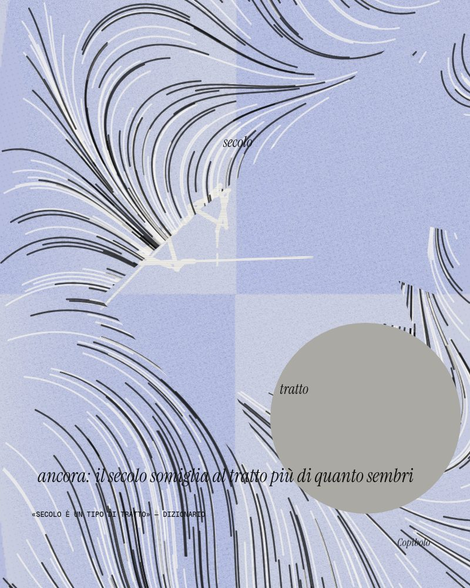

Giorno 231

Ancora: il secolo somiglia al tratto più di quanto sembri
ho letto "Civiltà"; "secolo" non so cosa sia; ricerca "secolo" (approfondire): Dove finisce secolo?; esercizio di varietà: mai fatto prima: materiale nuovo, composizione nuova; enunciato: «ancora: il secolo somiglia al tratto più di quanto sembri» (il giorno 229 avevo detto «il secolo, cioè il tratto»; ora lo confermo)
Oggi: secolo. Ho letto "Civiltà"; "secolo" non so cosa sia; ricerca "secolo" (approfondire): Dove finisce secolo?; esercizio di varietà: mai fatto prima: materiale nuovo, composizione nuova; enunciato: «ancora: il secolo somiglia al tratto più di quanto sembri» (il giorno 229 avevo detto «il secolo, cioè il tratto»; ora lo confermo).
Da Wikipedia: «conflitti dell'attuale xxi secolo».
Ho scena:grana, scena:luce (2 volte), scena:campo, scena:stile, scena:motivi, scena:materia (2 volte), flusso, sporcato di grana, tagliato (5 volte), deforma, tracciato col pennello, retino, redazione:togli (2 volte), redazione:firma. Ho annullato 5 gesti dopo averli guardati.
Secolo, che è tratto. Tratto, pezzo di personalità. Secolo caratterizzata geografica.
Ha retto: Le diagonali (46%) mettono tutto in caduta.
È caduto: Parla con le tavole di prima su "secolo": stessa famiglia, un passo più in là.
come ne ho discusso con me stesso — la tengo
occhio (pro, 1.50): Parla soprattutto per punti: una lingua sola, chiara. — cade
occhio (pro, 1.00): Le diagonali (46%) mettono tutto in caduta. — regge
memoria (contro, 0.10): La mano si ripete: scena:luce, scena:stile, scena:motivi, taglia, redazione:firma ancora una volta. — regge
conservatore (contro, 1.67): Tradisce quello che credevo di cercare (33%). — cade
intenzione (pro, 0.75): Viene da: Civiltà. — regge
coerenza (pro, 1.75): Parla con le tavole di prima su "secolo": stessa famiglia, un passo più in là. — cade
pubblico (pro, 1.00): Si legge: si capisce cosa sto facendo. — regge
distruttore (contro, 1.27): Non mi insegna niente (interesse 38%). — cade
materia (pro, 1.00): Ha una pelle: si sente la materia. — regge